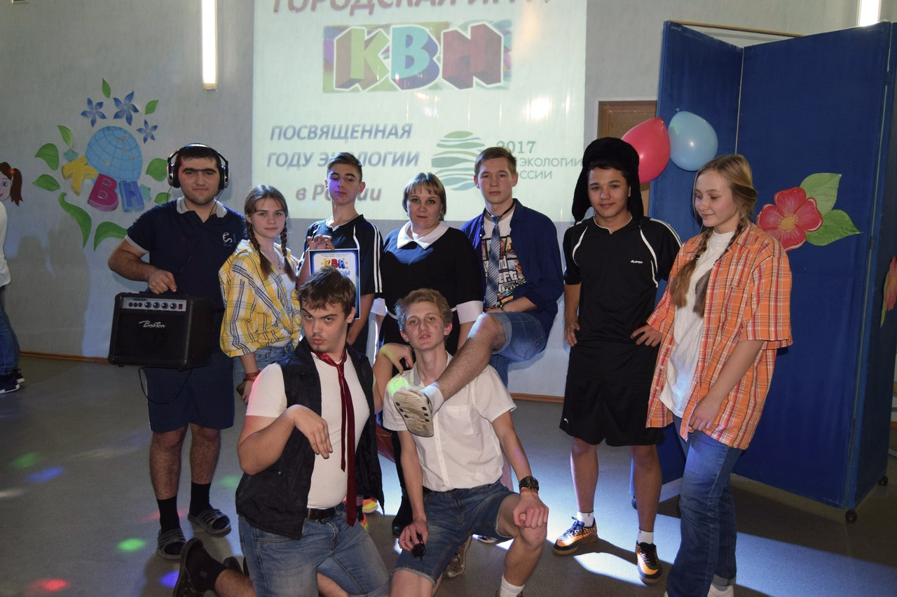
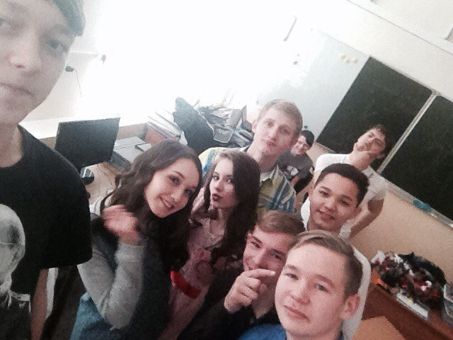

Долго мы планировали эту группу и эту идею. Наша команда, наш коллектив взял свое начало ещё с конца 2016 года. К нам в класс пришла новость о том, что мы должны поставить сценку на новый год. Так собрался наш коллектив из "высокоинтеллектуалов", которые предлагали идеи и отдавались на полную. Мы собирались каждый день, во время уроков и после, ругались между собой, из-за многих деталей и ошибок. Репетиции шли муторно, и нашлось много критиков на наш сценарий. Прошло так 2 недели и никто ничего толком не репетировал, а до показа сценки оставалось меньше недели. Во время репетиций было много ссор между членами команды. Оттуда и пошла идея для названия. - Мы, блин, сброд. – Прокричал в гневе Глеб. - Никчёмный причем. – Добавил Максим. - Мы – Никчемный сброд. – Радостно заявил Леша. Мы впервые вышли в школе со сценкой, которую почти всю сами построили с нуля. Мы просто порвали зал. Пусть нас и не было слышно в большей степени, но все нас обсуждали, а учителя, даже самые строгие-хвалили. И почти весь 2017 год мы в стенах школы и в своем кругу носили название нашего коллектива “Никчёмный сброд”. Но в ноябре 2017 года состоялась игра КВН среди школ города Орска. Тогда, по совету одного КВН-щика, название пришлось менять, так как на названии сказывалось благополучие всей команды. “Как корабль назовешь, так он и поплывет.” Первая игра состоялась 29 ноября 2017 года. Мы решили немножко поменять название и придумали только "Очень Кчёмный Сброд". После этого КВН выступления мы “Очень Кчемный Сброд” по сей день. И большая часть состава все ещё вместе, потому мы планируем идти дальше и не только в КВН. Также можно просмотреть более подробную информацию в нашей группе



